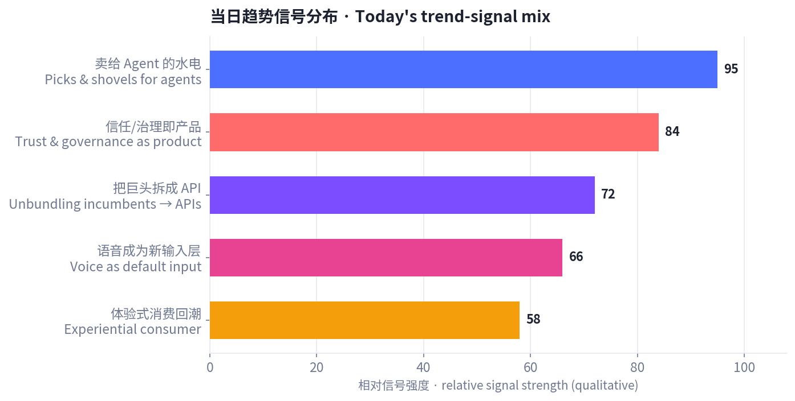
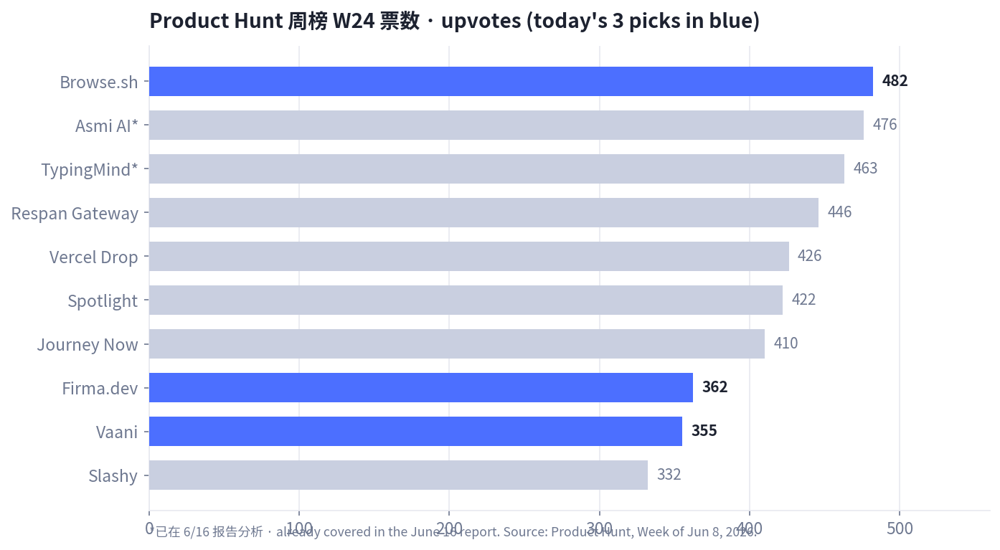
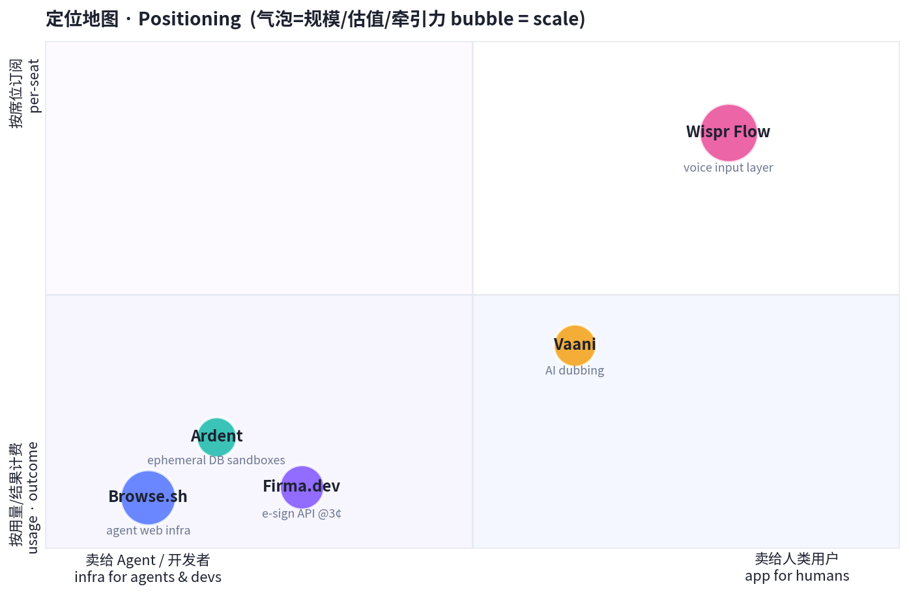
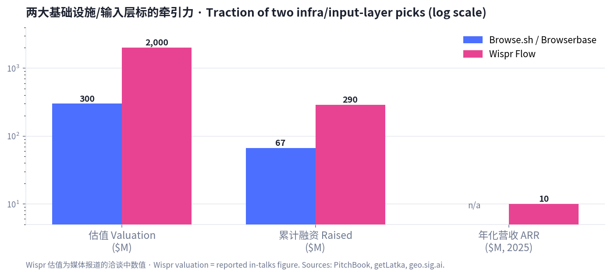

Daily Product Trends · 每日产品趋势
卖铲子给 AI——当热度退潮，信任成了产品
Sell shovels to the AI — and as the hype cools, trust becomes the product
2026 年 6 月 17 日 · June 17, 2026
数据来源 / Sources: Product Hunt（周榜 W24，6/8–6/14，当前最新已收录榜单）、Hacker News（6 月趋势 + front 快照）、a16z（《Notes on AI Apps in 2026》）、Google Trends（美国）、TikTok/Amazon 热销、小红书/RED 2026 消费趋势、PitchBook / getLatka 等公开数据。 方法 / Method: WebSearch + web_fetch 公开数据抓取。Product Hunt 当日（6/15+）日榜与本周 W25 周榜尚未生成，最新已收录为 W24；为避免与 6/16 报告重复（Bond / Publora / Honen / VC Boom / Asmi / TypingMind），今日改选 W24 未分析过的产品 + HN 发布 + a16z/HN 论点 + 电商/小红书消费信号。X / LinkedIn / 小红书需登录或客户端渲染，采用公开检索摘要替代（见文末说明）。
一句话 / In one line: 如果说昨天的主线是「AI 替你把事干完」，今天的主线是 「卖铲子给 AI，而当热度退潮、信任本身成了产品」——钱正从「会做的 AI」流向 两端：一端是给 agent 用的水电管线（浏览器、数据库沙盒、电子签 API、语音输入层），另一端是让 AI 在真实业务里「可被信任、可被审计、可被治理」的能力。
Today's throughline: if yesterday was "AI does the work for you," today is "sell shovels to the AI — and as the hype cools, trust itself becomes the product." Money is rotating to both ends: the plumbing agents run on (browsers, DB sandboxes, an e-sign API, a voice input layer), and the layer that makes AI trustworthy, auditable, and governable inside real workflows.
五条最强信号 / Five strongest signals:

今日精选中 Product Hunt 标的票数（蓝色为今日新选）/ Product Hunt upvotes for today's picks (blue = today's new picks)：

定位地图（客户是谁 × 怎么收费，气泡=规模）/ Positioning (who's the customer × how it's monetized, bubble = scale)：

共 7 个精选标的：5 个具体产品 + 1 个消费趋势 + 1 个宏观趋势。每节含数据表与链接。 7 picks: 5 products + 1 consumer trend + 1 macro trend. Each section has a data table and links.
Tagline: Give your agents muscle memory for automating the web. · PH 周榜 W24 #5（482 👍 / 51 💬） 链接 / Link: Product Hunt · browserbase.com
| 维度 Dimension | 分析 Analysis |
|---|---|
| 商业模式 Business model | 按用量（浏览器分钟数 / 会话）计费的云基础设施：Free → Developer $20/月 → Startup $99/月 → 企业 Scale 定制。开发者自助 PLG，用量越大付费越多。Usage-based infra. |
| 核心功能 Core features | 在云端大规模托管 / 运行 / 监控无头浏览器，让 AI agent 像人一样「打开网页、点击、填表、抓数据」；为自动化工作流与网页抓取提供稳定底座。 |
| 成功关键 Key success | 卡位「agent 时代的浏览器层」——agent 要操作真实网页就绕不开它；客户含 Perplexity、Vercel，2025 年跑了 5,000 万次会话、1,000+ 客户，网络效应与可靠性飞轮已起。 |
| 细分市场 Niche | Agent 网页自动化基础设施（browser infrastructure for agents）。 |
| 目标受众 Target | 做 agent / 自动化 / 抓取的开发者与 AI 公司。 |
| 品牌设计 Brand | 「Browse.sh」开发者气质（.sh 命令行联想）；"muscle memory for the web" 一句把抽象基础设施讲成人人能懂的画面。 |
| 产品数据 Data | Series B $4,000 万 @ $3 亿估值（2025/06），累计 ~$6,700 万；5,000 万会话 / 1,000+ 客户；2024 创立，旧金山。 |
| 口碑 Reviews | 被视为「agent 的 AWS-for-browsers」；隐忧在 Chrome WebMCP 等原生标准（号称省 89% token）可能从底层挤压第三方浏览器基础设施。 |
English: The "browser layer" for the agent era. Usage-based cloud infra (Free/$20/$99/custom) to host and run headless browsers so agents can click, type, and scrape like a human. ~$67M raised (Series B $40M at a $300M valuation, Jun 2025); 50M sessions across 1,000+ customers including Perplexity and Vercel. Bull case: picks-and-shovels with a reliability + network flywheel. Bear case: native standards like Chrome's WebMCP could compress third-party browser infra.
Tagline: Speak naturally, write in your style in every app. · PH 趋势产品（"靠转型找到 PMF"） 链接 / Link: Product Hunt · wisprflow.ai
| 维度 Dimension | 分析 Analysis |
|---|---|
| 商业模式 Business model | 消费 + 企业订阅：Pro $15/月（年付 $12），Free 每周 2,000 词（~每天不到 300 词）做转化钩子。Freemium SaaS，由个人渗透进企业。 |
| 核心功能 Core features | 在任意应用里「说话即成文」，并自动套用你的语气/风格；支持 100+ 语言、语音编辑；把听写从「输入法」升级为「跨应用写作层」。 |
| 成功关键 Key success | 押注「语音将成为默认输入」的范式迁移；体验顺滑 + 多语言形成口碑；据报道 270 家世界 500 强（含 Nvidia、Amazon）已在用，自下而上渗透。 |
| 细分市场 Niche | 跨应用语音输入 / 听写写作层（voice-first input）。 |
| 目标受众 Target | 重度写作者、开发者、知识工作者、多语言用户。 |
| 品牌设计 Brand | 极简、"flow" 意象（心流 + 流畅）；强调「写出你的风格」而非单纯转写，定位高于普通听写工具。 |
| 产品数据 Data | 2025 年 ~$1,000 万 ARR；据报道正以 ~$20 亿估值融 ~$2.6 亿（Menlo 领投），约为半年前 $7 亿估值的 3 倍；前期累计融资 ~$3,000 万。 |
| 口碑 Reviews | 顺滑度与语音编辑获好评；但 Trustpilot 仅 2.7/5，核心争议是隐私——为驱动 AI 会截屏当前屏幕。强增长与信任赤字并存。 |
English: A bet that voice becomes the default input. "Speak, and it writes in your style" across every app; 100+ languages. ~$10M ARR (2025); reportedly raising ~$260M at a ~$2B valuation (Menlo), ~3× its $700M mark six months prior; 270 Fortune 500 incl. Nvidia & Amazon. The tension: explosive growth vs. a 2.7/5 Trustpilot and privacy pushback (it screenshots your screen). A textbook "wonder vs. inspection" stock.
Tagline: Electronic signature API at just ~3¢ per envelope, built for developers. · PH 周榜 W24 #14（362 👍 / 43 💬） 链接 / Link: Product Hunt · firma.dev
| 维度 Dimension | 分析 Analysis |
|---|---|
| 商业模式 Business model | 按封计费的开发者 API：€/$0.029（~3 美分）/ 封，号称比 DocuSign 便宜约 99%；免费沙盒（真实文档、无限用量）先用后付。Pure usage API. |
| 核心功能 Core features | 干净的 REST API + 可嵌入的模板/签署编辑器，几小时内把「电子签」嵌进自家产品；托管签署流程；合规覆盖 ESIGN / UETA / GDPR，银行级加密。 |
| 成功关键 Key success | 经典「把巨头的一个功能做成创业公司的整个产品」——用极致降价 + 开发者体验，吃 DocuSign 价格与集成痛点；天然适配「agent 要自动发起签署」的新场景。 |
| 细分市场 Niche | 开发者电子签基础设施（API-first e-signature）。 |
| 目标受众 Target | SaaS / 初创开发者、需要在产品内嵌签署的团队、自动化/agent 工作流。 |
| 品牌设计 Brand | .dev 域名 + "$0.029" 直接打在脸上的定价叙事；文档优先、沙盒优先，降低试用门槛。 |
| 产品数据 Data | PH W24 #14，362 票 / 43 评论；联合创始人 Derick；定价 €0.029/封。 |
| 口碑 Reviews | 被赞「开发者版 DocuSign、几乎免费」；疑虑在企业级法务背书、长期可靠性与「低价能否养活合规成本」。 |
English: Unbundling DocuSign into a 3¢-per-envelope API, ~99% cheaper, developer-first (clean REST, embeddable editors, free sandbox, ESIGN/UETA/GDPR). The "one feature of an incumbent = a startup's whole product" playbook — and a natural fit for agents that need to initiate signatures programmatically. Open questions: enterprise legal trust and whether rock-bottom pricing covers compliance cost.
Tagline: Postgres sandboxes in seconds, with zero migration. · Launch HN（87 👍 / 35 💬，捕获时） 链接 / Link: Hacker News · tryardent.com
| 维度 Dimension | 分析 Analysis |
|---|---|
| 商业模式 Business model | 开发者基础设施，预计按用量 / 沙盒数计费（YC P26 早期）。Dev-infra, usage-based. |
| 核心功能 Core features | 几秒拉起一个隔离的 Postgres 沙盒、零迁移接入现有库；适合测试、预览环境、以及给「会自己改数据库」的编码 agent 一个安全可丢弃的实验场。 |
| 成功关键 Key success | 精准踩中 HN 6 月最强信号之一——「安全/隔离的开发环境正从配角变成一个独立品类」；coding agent 越自动，越需要可隔离、可回滚、可审计的环境。 |
| 细分市场 Niche | 临时 / 隔离开发环境（ephemeral dev environments for agents）。 |
| 目标受众 Target | 工程团队、做编码 agent 的公司、需要预览/测试库的 SaaS。 |
| 品牌设计 Brand | "Ardent" + tryardent.com，YC P26 背书；"zero migration" 直击采用门槛。 |
| 产品数据 Data | Launch HN 87 票 / 35 评论（捕获时），YC P26 批次。 |
| 口碑 Reviews | HN 讨论聚焦「秒级 + 零迁移」是否真成立、与 Neon/Supabase 分支功能的差异；正面在于「给 agent 一个安全沙盒」的时机正好。 |
English: Spin up an isolated Postgres sandbox in seconds with zero migration — for tests, preview envs, and giving autonomous coding agents a safe, disposable place to touch a database. It lands squarely on HN's strongest June signal: secure/isolated dev environments are becoming their own category as coding agents get more autonomous. Debate centers on how it differs from Neon/Supabase branching.
Tagline: Lip-synced AI dubbing for creators, brands and studios. · PH 周榜 W24 #15（355 👍 / 28 💬） 链接 / Link: Product Hunt
| 维度 Dimension | 分析 Analysis |
|---|---|
| 商业模式 Business model | 推测为按分钟 / 订阅的创作者 SaaS（公开财务数据有限）。Creator SaaS（limited public data）. |
| 核心功能 Core features | AI 把视频配音翻译成多语言并对口型（lip-sync），让一条内容低成本本地化到多市场；面向创作者、品牌、工作室。 |
| 成功关键 Key success | 吃「内容全球化 + 短视频本地化」红利；对口型解决了传统配音「声画不同步」的体验硬伤，契合品牌出海与创作者多语言分发刚需。 |
| 细分市场 Niche | AI 生成媒体 / 视频本地化（AI dubbing & localization）。 |
| 目标受众 Target | 出海品牌、跨语言创作者、MCN / 工作室。 |
| 品牌设计 Brand | "Vaani"（梵语「声音/言语」）名字有文化质感；定位「creators + brands + studios」覆盖 C 到 B。 |
| 产品数据 Data | PH W24 #15，355 票 / 28 评论。（其余量化数据公开有限，本节以品类与 PH 信号为主。） |
| 口碑 Reviews | 关注点在口型自然度、音色保真与多语言质量；与 HeyGen / ElevenLabs dubbing 等正面竞争。 |
English: AI dubbing with lip-sync so one video localizes cheaply into many languages — for creators, brands, and studios. Rides content-globalization + short-video localization; lip-sync fixes the classic "audio doesn't match the mouth" experience gap. Public financials are limited, so this section leans on category + PH signal. Competes with HeyGen / ElevenLabs dubbing.
信号来源 / Signals: TikTok「TikTok made me buy it 2026」、Amazon 热销、小红书 / RED 2026 消费趋势、Google Trends（美国）。
| 维度 Dimension | 分析 Analysis |
|---|---|
| 商业模式 Business model | DTC / 电商 + 内容种草飞轮：短内容拉新即时种草，深内容建立信任完成「心智占领」。Content-commerce flywheel. |
| 核心功能 Core features | 居家 SPA 化 硬件（带灯 + 蓝牙音箱的智能镜、香薰机、「会按摩的花洒」、真空封口机）+ 傻瓜式/穿戴式美妆（极致降低使用门槛）。 |
| 成功关键 Key success | ① 视觉冲击：「一张上脸前后对比图 > 一千句文案」；② 降低使用门槛即可引爆；③ IP 联名 / 游戏化 是社交传播核武器；④ 兴趣驱动（「为一场演出赴一座城」）。 |
| 细分市场 Niche | 居家体验升级 + 低门槛美妆 + 抗老心智空白（讨论热度极高、深耕品牌少）。 |
| 目标受众 Target | Z 世代 / 都市女性 / 远程工作者；追求「即时体验」与「确定性结果」的消费者。 |
| 品牌设计 Brand | 小红书审美：信息卡片化、清新/高级感、强对比；命名与视觉主打「肤感 / 质地 / 仪式感」。 |
| 产品数据 Data | 小红书：护肤「肤感/质地」讨论度已压过「成分」；抗老需求热但供给少；Google Trends 美国上升词含 Costco(+4,600%)、"2026"(+1,500%)、Stranger Things(+400%)。 |
| 口碑 Reviews | 「上身/上脸即买单」；用户对「成分党」疲劳，转向「体感、质地、即时效果」与「省时间的傻瓜式」。 |
English: Against the AI-infra current runs a consumer one: experiential + feel-first consumption. TikTok/Amazon push at-home "spa-ification" (smart mirrors with light+speaker, diffusers, "massaging" shower heads, vacuum sealers); Xiaohongshu shows "feel/texture" now outranks "ingredients" in skincare, foolproof/wearable makeup ignites fastest, and anti-aging is a mindshare whitespace (high heat, few committed brands). Visual before/after + IP co-brands / gamification are the spread engines.
信号来源 / Signals: a16z《Notes on AI Apps in 2026》(Anish Acharya)、Hacker News 6 月趋势、agent 基础设施融资。
| 维度 Dimension | 分析 Analysis |
|---|---|
| 商业模式 Business model | 「按结果/工作量计费」取代「按席位」；agent 越自动，越愿为确定性结果付费（outcome pricing）。 |
| 核心功能 Core features | a16z：工具正从「做（making）」转向「想（thinking）」——难题从「怎么做」变成「做什么」；每个职能（法务/财务/HR）都要变成「软件团队」。HN：安全开发环境、审计链、人审、可治理正成为独立品类。 |
| 成功关键 Key success | 「让 AI 在真实业务里可被信任、可生存」比「再做一个 wrapper」更值钱；供应链投毒（恶意 npm/PyPI 包）与「工具说关就关」推动买家从「惊叹」转向「证明给我看」。 |
| 细分市场 Niche | 信任层 / 治理层 / 评测与可观测性（trust & governance for AI）。 |
| 目标受众 Target | 企业买家、平台团队、被「shutdown 疲劳」教育过的技术决策者。 |
| 品牌设计 Brand | 叙事从「魔法 / wow」转向「可靠 / 可审计 / 不会突然停服」；"every team is a software team"。 |
| 产品数据 Data | agent 市场 ~$78 亿(2025)→~$526 亿(2030) 区间估计；基础设施融资：Mem0 $24M、Arize $70M、Braintrust $80M；Anthropic 收购 Vercept；超大厂 2026 资本开支指引 >$3,200 亿。 |
| 口碑 Reviews | HN 共识：「2026 最大机会不是再做一个 AI app，而是让 AI 在真实工作流里可生存」——安全、溯源、审查、权限、给非技术人的白话界面。 |
English: The meta-story tying it together. a16z: tools shift from making to thinking ("what to build" is the hard part); "every team should be a software team." HN June: the mood moved from wonder to inspection — secure dev environments, audit trails, human review, and governance are becoming product categories, driven by AI-assisted supply-chain attacks and "shutdown fatigue." The biggest 2026 opportunity isn't another app — it's making AI survivable inside real workflows. Pricing shifts from per-seat to outcome-based.
| 产品 Product | 类别 Category | 商业模式 Model | 关键数据 Key data | 目标受众 Target | 链接 Link |
|---|---|---|---|---|---|
| Browse.sh | Agent 浏览器基础设施 | 用量计费 $20–$99+ | ~$67M 融资 / $300M 估值；50M 会话；1,000+ 客户 | Agent / 自动化开发者 | link |
| Wispr Flow | 语音输入层 | Freemium $15/月 | ~$10M ARR；据报 ~$2B 估值融资；270 家 F500 | 写作者 / 知识工作者 | link |
| Firma.dev | 电子签 API | 按封 ~3¢ | 比 DocuSign 便宜 ~99%；PH #14（362） | SaaS / 初创开发者 | link |
| Ardent | 开发环境基础设施 | 用量计费（早期） | Launch HN 87 票；YC P26；零迁移 | 工程 / 编码 agent 团队 | link |
| Vaani | AI 配音 / 本地化 | 创作者 SaaS（推测） | PH #15（355） | 出海品牌 / 创作者 | link |
| 体验式消费 | DTC / 电商趋势 | 内容种草飞轮 | 肤感>成分；抗老空白；Costco +4,600% | Z 世代 / 都市女性 | RED |
| 信任即产品 | 宏观 / 投资主题 | 按结果计费 | agent 市场 ~$7.8B→$52.6B (2025→2030)；infra 融资活跃 | 企业 / 平台买家 | a16z |
两大基础设施/输入层标的牵引力对比 / Traction of the two infra/input-layer picks：

1. 卖铲子比淘金更稳：钱在 agent 的「水电层」。/ Sell shovels, not gold. 今天 5 个产品里有 4 个不直接服务终端消费者，而是服务「跑 agent 的人 / agent 本身」——浏览器（Browse.sh）、数据库沙盒（Ardent）、电子签 API（Firma.dev）、语音输入（Wispr）。超大厂 2026 资本开支指引超 $3,200 亿、Mem0/Arize/Braintrust 等基础设施轮持续，印证「picks-and-shovels」是当下确定性最高的位置。
4 of today's 5 products serve the people (or agents) running agents, not end consumers. Infra is where the durable money is.
2. 「巨头的一个功能 = 创业公司的整个产品」。/ One incumbent feature = a whole startup. Firma.dev 把 DocuSign 拆成 3 美分 API，Browse.sh 把「浏览器」拆成 agent 可调用的服务。极致单点 + 开发者体验 + 用量计费，是 agent 时代的标准拆解打法。
Unbundle one painful feature, price it per-use, win developers.
3. 增长与信任在背离——这正是机会。/ Growth and trust are diverging — that's the opening. Wispr 一边冲 $2B 估值，一边 Trustpilot 只有 2.7/5（截屏隐私）。HN 6 月情绪从「惊叹」转向「审视」。谁能在高增长的同时补上信任、隐私、可审计，谁就能穿越这轮「证明给我看」的周期。
Wispr races to a $2B valuation while sitting at 2.7/5 on trust. Whoever closes the trust gap wins the "prove it" cycle.
4. 收费从「按席位」转向「按结果」。/ From per-seat to per-outcome. Browse.sh 按浏览器分钟、Firma.dev 按封、Ardent 按用量——当干活的是 agent 而非「登录的人」，席位订阅失去意义，用量/结果计费成为默认。
When the worker is an agent, seats stop making sense; usage/outcome billing becomes default.
5. 别忘了离屏幕最远的钱：体验式消费。/ Don't forget the money farthest from the screen. 当科技圈卷 agent 基础设施时，消费端在为「上身感、仪式感、确定性结果」付费（居家 SPA、傻瓜式美妆、抗老空白）。a16z 的「thinking vs making」与小红书的「肤感>成分」是同一枚硬币：人要的是判断与体验，把执行交给工具。
While tech piles into agent infra, consumers pay for feel, ritual, and certain outcomes. "Thinking vs making" and "feel over ingredients" are the same coin.